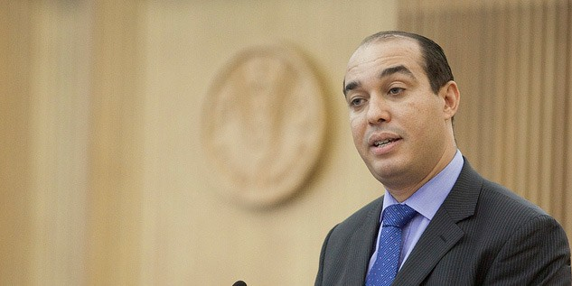

Morocco world News
Find out all the international news about the Maghreb, to read and re-watch, click on the button below .
View More To KnowFind out all the international news about the Maghreb, to read and re-watch, click on the button below .
View More To KnowWelcome, we present to you new and official news on our website
Morocco Strengthens Position in Women, Peace and Security Index

Mohammed Ouzzine Elected New Secretary-General of Popular Movement Party
France Tops List of Investment Destinations for Moroccans
.jpeg)
- Accuracy - Fairness, balance and impartiality - Editorial independence and not being affected by political and partisan pressures or working for them - Respecting the privacy of others and dealing openly and honestly with people - Working for the public interest and being responsible towards it. Accuracy is key if you want to maintain your credibility and gain the trust of your audience.

- The philosophies of journalistic institutions may differ, but they agree on the principles of following: truth, accuracy, objectivity, impartiality, tolerance and responsibility before readers. Following these ethics begins with obtaining information, taking into account its importance, and then communicating it to the public. .

- Paper: Newspapers, newspapers, magazines, periodicals,..etc. - Audio: radio, telephones, microphone, and audio equipment. - Visual: TV, satellite, and cinema. - Digital: Internet via computers,phones.
- Lurking journalism. - Journalism of celebrities or people. - Investigative Journalism.

The concept of the press as a fourth estate is used to compare the press (the media in general) to Montesquieu's three branches of government: legislative, executive, and judicial.

(The Christian Science Monitor) 2/1/2018 - The lenient freedom of opinion laws did not stop some branches of the government from cracking down on journalists under the pretext of security. Their self-censorship as a result further reduced trust in the media, prompting news-hungry Moroccans to look elsewhere.

For David Alvarado, a Spanish journalist who has been covering North Africa for more than a decade, the indicator of how free journalists are reporting in Morocco lies in which government ministry monitors the most. Officially, it is the Ministry of Information that issues press cards and can expel journalists or prevent them from working here

Morocco's penal code conflicts with news laws. The judicial system imposes prison sentences for press coverage it deems offensive to Islam, the king or the country, leaving little room for critical coverage of most issues affecting Morocco. Meanwhile, the threat of harassment, arrest, fines, and suspension—plus economic pressure from advertisers